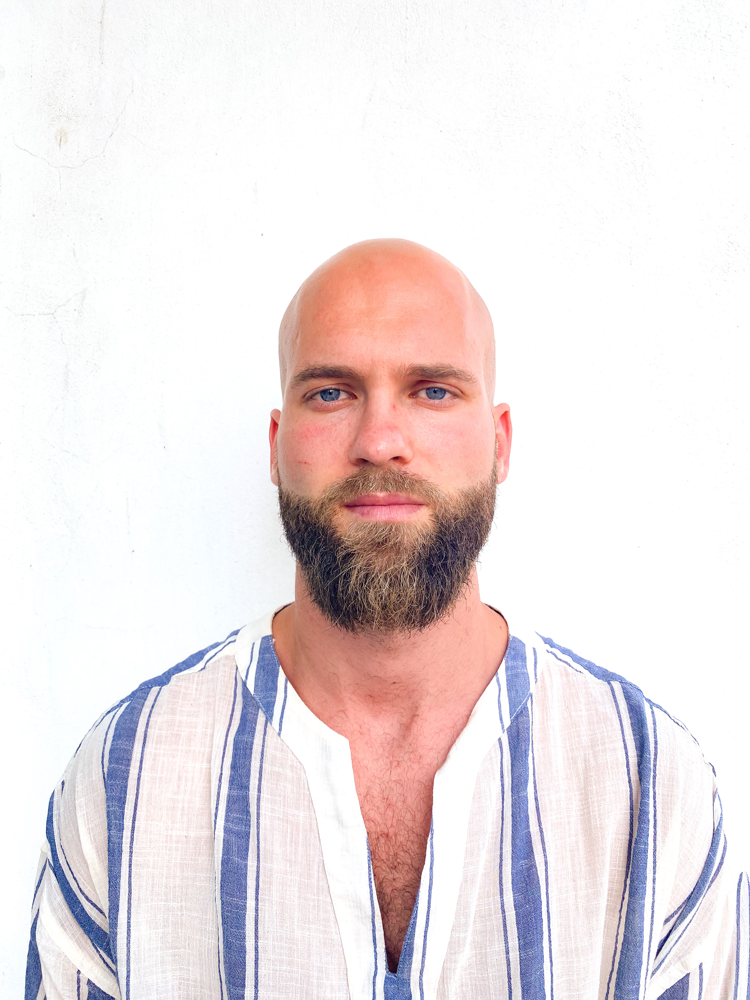

Beniamin Mateas

WEB DEVELOPER RESUME
Personal informations
- Address: strada Ion Heliade Radulescu, nr. 28, bloc B6, ap.14, oras Targu-Mures, jud. Mures
- Mobile number: 0040744846494
- Email address: beni_arty@yahoo.com
- Sexul masculin | Data naşterii 17/07/1993 | Naţionalitatea romana
Summary
I am a 31-year-old web development enthusiast with a foundational background in IT, having studied for two years at the Faculty of Computer Science in Târgu Mureș. I have hands-on experience with HTML, CSS, and JavaScript, and I'm eager to expand my skills in modern web development technologies. As a beginner, I am dedicated to learning and growing within a dynamic team, with a strong focus on delivering high-quality, user-friendly web solutions. I am passionate about applying my knowledge to real-world projects and continually improving as a developer.
Education
-
2 years of IT, UMFST Targu-Mures(2021-2022)
Work Experience
-
2013-2014 Director
BAM CONSTRUCTIONS LONDON LTD, LONDRA, UK
main activity-constructions
-
2016-2017 Director
TOP CARS RENTAL LIMITED, LONDRA, UK
main activity-car rental
-
2019-2020 Director
ECOMAT PLUS SRL, Targu-Mures, Roamnia
main activity-agriculture